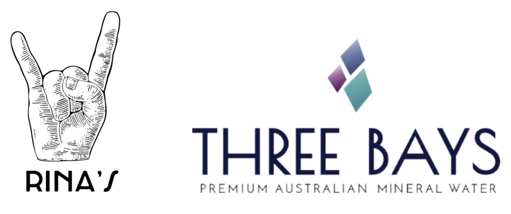

Table Talks activated Carlton Gardens through a multi-zone open-air dining experience set within the landscape of the Royal Exhibition Building and the Hochgurtel Fountain.
The experience invited guests to slow down and engage with the details of the site, from the historic architecture to the movement of water from the fountain and the everyday rhythm of the gardens. Rather than a single seated meal, guests moved through a series of zones across the lawn, allowing the location, the food, and the atmosphere to unfold gradually.
The experience concluded with a dessert performance that transformed the final course into a shared moment of curiosity and gathering. The activation brought together food, heritage, and public space to create an immersive way of experiencing one of Melbourne's most significant cultural landmarks.
EVENT SPONSORS
